MIH1101 · Term Project
MIH1101 Term Project
Interactive web edition of the submitted report
Executive summary
Many university students sleep too little, and late night scrolling is one cause they can change. We surveyed 43 students in Singapore. 72.1% reported sleeping under 7 hours, and 90.7% scrolled every night or often before bed. We propose Dozy Town, a gamified sleep app. A student’s owl and town grow overnight when they keep a regular bedtime, complete a short evening wind down quest, and sleep within the recommended range. The app also offers personalised pattern feedback (Sleep Detective), short learning cards, an optional mood Garden and cooperative social features. It works with a wearable, phone only, or manual entry. This is an ideation proposal and has not been built or tested. We state how each feature links to our findings and how strong that evidence is. We also propose stakeholder roles and a staged evaluation.
1. Introduction
Phone use late at night is common among university students. Social media is designed to hold attention through infinite scroll and autoplay, and bedtime use is linked to social motivations, fear of missing out and habitual checking. “Doomscrolling” means compulsively scrolling through negative news or feeds. Poor sleep is associated with low mood, poor concentration and daytime sleepiness (Dinis & Bragança, 2018). It can mean too little sleep, poor quality sleep, or irregular timing. Our research asks whether night time phone use among university students relates to later bedtimes and shorter sleep, and whether poor sleep relates to daytime functioning and mood. Our primary outcomes are sleep habits (bedtime scrolling, regularity and sleep within the recommended range), because they can be measured within a semester. Mental wellbeing is a secondary outcome.
2. Literature review
2.1 Poor sleep
Sleep runs in cycles of about 90 minutes, alternating between non REM stages (N1 to N3) and REM sleep (StatPearls, n.d.). Deep sleep is concentrated early in the night and REM later (Kryger et al., 2017), so a shortened night after a late bedtime may cut REM disproportionately. REM sleep appears to support emotional regulation (Altena et al., 2016; Sullivan et al., 2025), which may help explain the link between sleep loss and low mood. Common student patterns include sleep debt and social jetlag, which means short weekday sleep and long weekend catch up. Social jetlag is not a formal disorder but is associated with depression and metabolic risk. Insomnia is persistent difficulty falling or staying asleep with daytime impact. Delayed sleep wake phase disorder is a body clock that runs late.
2.2 Doomscrolling and sleep
Scrolling can directly replace sleep time. Reviews find that digital media use is associated with shorter and poorer sleep in young adults, especially at bedtime. Autoplay and personalised feeds make stopping difficult, and alarming content can keep the mind active. Evening screen light can also delay the body clock and melatonin release (Chang et al., 2015). Short form video has been linked to poorer sleep quality in adolescents (Jiang & Yoo, 2024). Much of this evidence is correlational and self reported, and few studies separate content type. That is the gap our survey addresses.
2.3 Consequences
In the short term: sleepiness, poorer concentration and memory, irritability, lower mood and more caffeine use. In the medium term: social jetlag, insomnia and higher anxiety, which is where a vicious cycle can begin. In the longer term: higher risk of clinical insomnia, depression and anxiety, and habits that carry into working life.
3. Primary data: student survey
3.1 Method and sample
From the literature we hypothesised that heavy social media use before bed harms university students’ sleep quality, and through it their wellbeing. We ran an online survey of university students in Singapore with multiple choice and open ended questions (n = 43). Respondents in general came from variety of faculty background and their academic years as shown below.
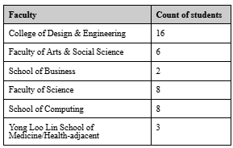
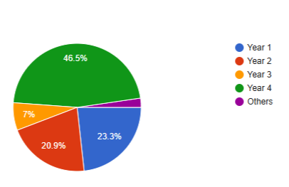
3.2 Findings
For our findings, only 6 of 43 got into bed before midnight, and 25 (58%) at 1:00AM or later. Wake-up times ranged from 6:30AM to 11:00AM. 72.1% reported sleeping under 7 hours, against the recommended 7 to 9 hours for ages 18 to 25 (Lo, 2026). The “more than 7 hours” band cannot show who sleeps over 9, so we report only the share under 7. The most common time to fall asleep was 30 minutes (19 responses), and 8 students reported 60 minutes or more (some gave more than one estimate).
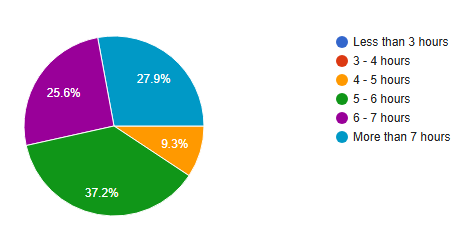
Table 1 shows the reasons why students sleep late. Social events, CCAs and work (19) and studies (15) were the most common. Doomscrolling (12) was third. The former two commitments are hard to eliminate and require different approaches to target, but scrolling is a habit students control, so our solution targets it. Students reportedly scroll social media most of them: YouTube (18), TikTok (15) and Instagram (14) were the most named, each by fewer than half of respondents, and mostly as short form feeds which can reduce sleep quality among adolescents (Jiang Li et. al, 2024).
Table 1. Reasons for sleeping late, and content watched before bed (number of students)
Reason for sleeping later | n | Content before bed | n |
|---|---|---|---|
Social events, CCAs, work | 19 | YouTube | 18 |
Studies, assignments | 15 | TikTok | 15 |
Doomscrolling | 12 | 14 | |
Binge reading, hobbies, gaming | 6 | Other entertainment | 13 |
Procrastination | 5 | Novels | 4 |
Insomnia or stress, body clock, late meals or coffee | 6 | Twitter, Reddit | 6 |
Awareness and willingness. 58.1% rated their awareness of ways to improve sleep at 4 or 5 out of 5, and 41.9% rated it 3 or lower. So awareness is moderate, and knowing alone does not seem enough to change behaviour. 60.5% would scroll less if it helped them sleep better and 32.6% said maybe. 62.8% scrolled every night and 27.9% often in the hour before bed, so 90.7% scrolled every night or often. After a doomscrolling night, 69.8% felt tired or exhausted, and this can imply how lack of sleep can result in poorer mental health (Spytska L, 2024). Students suggested cutting phone use before bed, calming activities and a steady night routine when prompted.
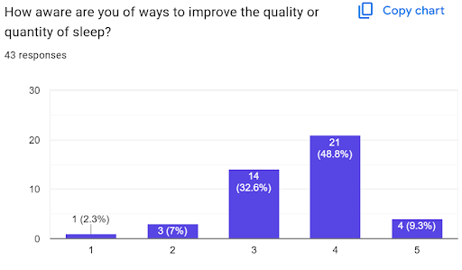
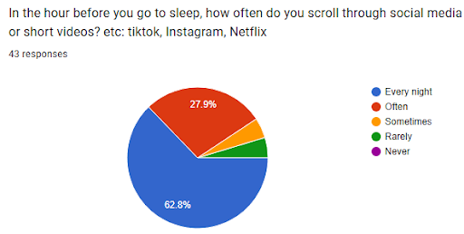
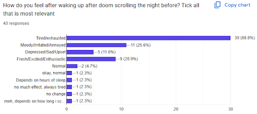
Limitations. The sample is small, self reported, cross sectional and mostly female and Year 4, and with majority coming from NUS. Open ended answers about content type were interpreted differently by respondents (i.e. platform vs type of content). We did not compare scrolling and non-scrolling nights, so the survey shows need and prevalence, not that scrolling causes poor sleep. The findings are preliminary and only indicate where an intervention could potentially help.
4. Existing digital solutions
We reviewed apps that target sleep, plus Walking Charlie, which inspired our concept. Table 2 compares their features.
Table 2. Feature comparison (✓ present, — absent)
Feature | Walking Charlie | Pokémon Sleep | SleepTown | Sleepagotchi | Samsung Health | HPB Sleep Challenge | Dozy Town |
|---|---|---|---|---|---|---|---|
Virtual pet or character | ✓ | ✓ | — | ✓ | ✓ (animal profile) | — | ✓ |
Points, rewards, unlockables | ✓ | ✓ | ✓ | ✓ | — | ✓ (vouchers) | ✓ |
Friends, group challenges | ✓ | Friends only | ✓ | Friends only | — | — | ✓ (cooperative) |
Sleep duration and timing | N/A | ✓ | ✓ | ✓ | ✓ | ✓ (7 hours or more) | ✓ |
Sleep stages, recovery metrics | N/A | Estimated categories | — | — | ✓ (wearable) | — | ✓ (low weight) |
Bedtime reminders or coaching | N/A | ✓ | ✓ | ✓ | ✓ | — | ✓ |
Pre bed phone use reduction | — | — | ✓ | — | Indirect | — | ✓ |
Links social media habits to sleep | — | — | — | — | — | — | ✓ |
Most competitors track or reward sleep outcomes, and several already offer pets, rewards and friends, so those features are not our gap. The clear gap in this comparison is that none links evening social media habits to sleep outcomes. Only SleepTown and Samsung Health address phone use before bed, and Samsung only indirectly. We aim to keep the proven engagement features and add that link in our solution.
5. Proposed solution: Dozy Town
5.1 Overview and value proposition
Dozy Town is for university students who delay bedtime through late night scrolling. The idea comes from Walking Charlie, where a character shows the cost of too little walking. Existing apps mostly report sleep after the fact, so we built the concept around the evening decisions that come before it. Each user has an owl that reflects their sleep. After a restful night the owl is cheerful. After a poor night it looks tired and comments, for example, on cravings for unhealthy food, which is an evidence based effect of sleep loss, and offers gentle tips. Sleep is passive and can feel like wasted time, so the town grows overnight and makes sleep visibly productive. The owl also highlights links between evening activity and sleep, such as later bedtimes after long social media use.
5.2 Design principles
- Reward consistency, wind down habits and sleep within the recommended range. The score combines consistency (similar bed and wake times on weekdays and weekends, which reduces social jetlag), duration within the range for the user’s age (7 to 9 hours for ages 18 to 25), and estimated quality, which has the lowest weight because stage estimates from wearables are less reliable. Sleeping beyond the range earns no extra, so the app never says “sleep more is better”.
- Keep evening screen time short. A tool meant to cut late night phone use must not become another reason to stay on the phone, so evening interactions are brief and the interface is calm.
- Accessibility and privacy. The app works without a wearable and collects only what it needs.
- No clinical claims. The app helps students reflect on routines, not diagnose, and does not replace professional care.
5.3 Features
Daily loop. Evening: a short wind down quest before the user’s intended bedtime, such as dimming lights, reading, and a final scroll check, after which the phone is put away. Overnight: the town grows while the user sleeps. Morning: a 30 second check in records how rested the user feels and the category of what they did before bed (for example short videos, news, messaging or studying).
Sleep Detective. After each night, the app scores sleep (principle 1) based on three criteria:
- Consistency: Encourages regular bedtimes and wake-up times, including weekends, to maintain circadian rhythms and reduce “social jetlag”.
- Duration: Recommends 7–9 hours for young adults aged 18–25, providing age-adjusted feedback to avoid the negative effects of insufficient or excessive sleep.
- Quality: Considers sleep continuity and the four sleep stages (entering sleep, light sleep, deep sleep and REM), helping users understand why they may feel tired despite sufficient sleep duration.
Over time, the app also reveals associations between evening activities and sleep patterns, such as “later bedtimes after long short-video sessions”, without implying causation. The score unlocks three rewards:
- In app currency to customise the owl and expand the town. This is the main motivator.
- Faster tasks when rested. A rested owl finishes a task such as sewing an outfit in 15 minutes. A tired owl takes 2 hours. This makes the cost of poor sleep visible without punishing the user.
- Modest, capped vouchers from university stores or partners. They give sleep a real world value, but stay small because large external rewards can weaken intrinsic motivation.
Rewards follow regular habits, not a single perfect night, which supports lasting change.
Wearable integration and accessibility. Three tiers: no wearable (manual bedtime and wake time with daily check-ins), phone only (with permission, screen activity helps estimate evening habits and sleep timing), and compatible wearable (such as Apple Watch, Fitbit or Garmin through health-data integrations). This includes students without a smartwatch and those uncomfortable sharing much data, although manual estimates may be less accurate.
Dream Library. Cards of about 60 seconds on circadian rhythms, evening light, caffeine timing, bedtime procrastination, sleep and anxiety, and when to seek professional help. A short quiz earns currency and unlocks decorations or buildings. This makes science accessible to students who would not read a scientific article after class, while explaining why certain habits improve sleep.
Garden. An optional daily mood check-in grows a garden without becoming clinical monitoring. If poor sleep or low mood continues, the owl shows encouraging messages and a support card with general sleep-habit tips, a short guided wind-down exercise (CBT-I-inspired tips such as a steady wake time), and information about university counselling or professional support services. Users are never penalised for skipping check-ins or reporting negative moods. The app does not replace professional assessment.
Social features. Peers shape sleep habits, and going to bed early can feel like missing out or being different from friends. A Buddy Pledge lets friends commit together to a wind-down routine for a week to unlock a shared building or decoration. Town visits allow encouraging messages, while optional badges and friendly challenges provide additional motivation. Features are cooperative, optional, and avoid leaderboards or unhealthy competition. Friends never see each other's sleep or mood data.
Privacy. Data stays on the device by default. The app stores broad activity categories only, not content titles or messages. Wearable and phone access are optional, and research sharing needs informed consent.
5.4 Prototype
The conceptual prototype has five screens (images generated with Copilot and ChatGPT): (1) a rested, energetic owl, (2) a tired owl with dark circles, food cravings and gentle advice, (3) the town after healthy sleep, with an active owl and a 15-minute task, (4) the town after poor sleep, with a tired owl sitting on a bench and a 2-hour task, and (5) the evening wind-down quest, encouraging calming activities such as reading and avoiding caffeine. Together, these screens illustrate how sleep habits influence the owl's appearance, task efficiency and town development.
Clickable prototype
Explore the proposed Dozy Town experience inside the report. Choose a feature to preview the interaction.
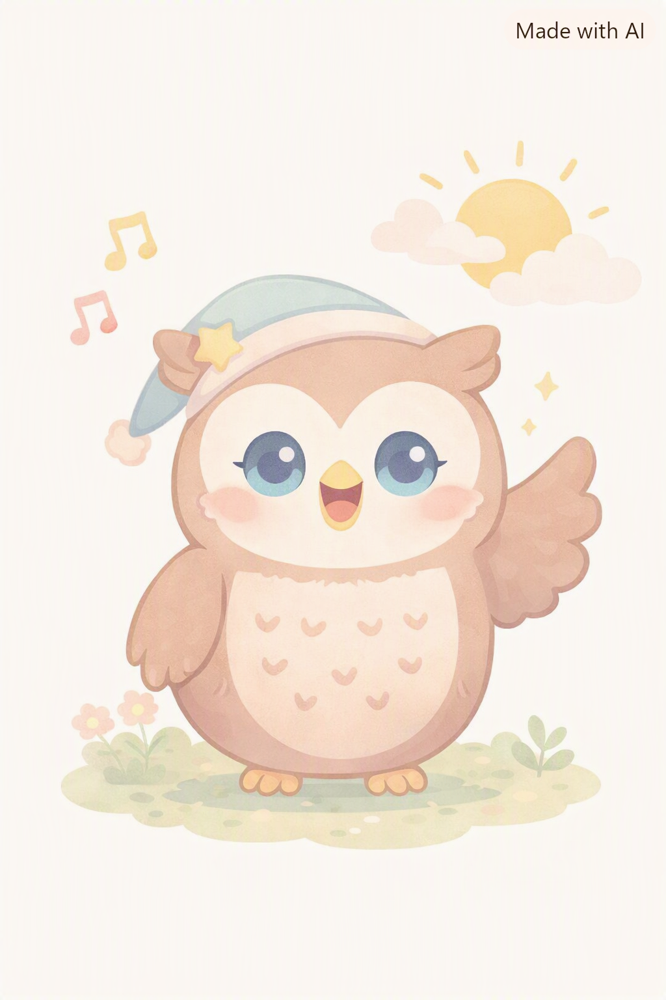
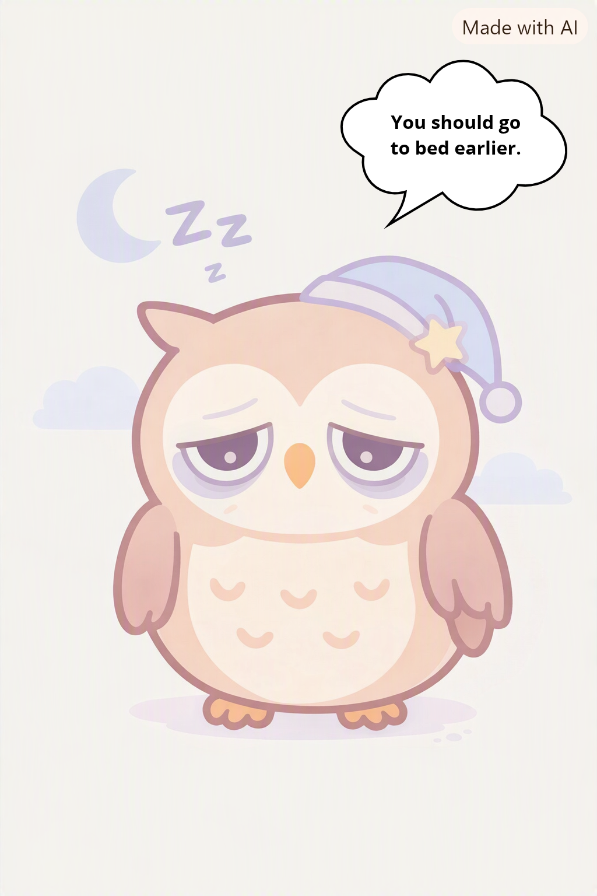
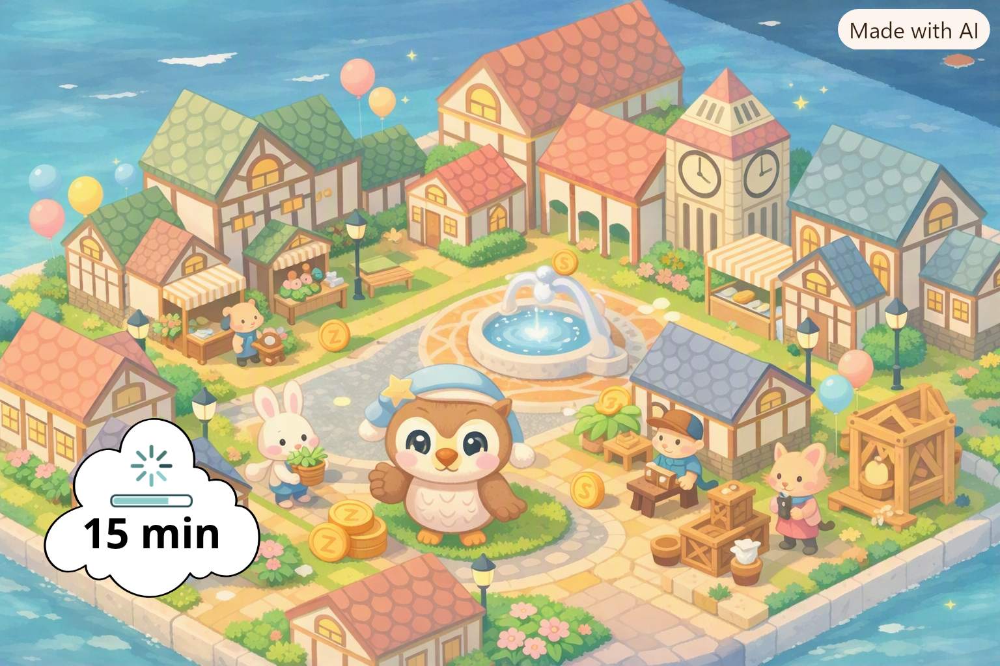
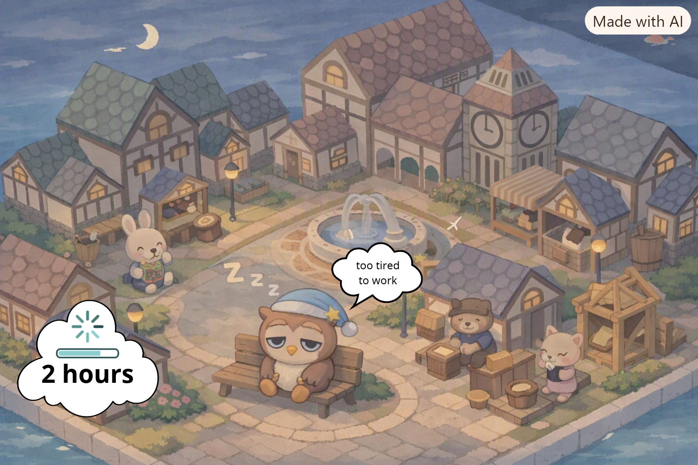
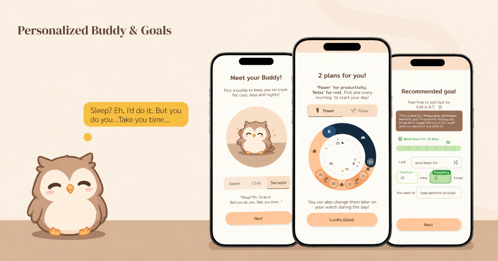
5.5 Interdisciplinary integration and evidence
Each feature combines at least two disciplines. Table 3 shows the discipline combination, the survey evidence, and how strong that evidence is.
Table 3. Features, disciplines and evidence
Feature | Disciplines | What our findings show | Strength of evidence |
|---|---|---|---|
Sleep Detective | Data and AI, psychology, medicine | 90.7% scrolled every night or often; YouTube, TikTok and Instagram led; 69.8% felt tired or exhausted after a doomscrolling night. No competitor links social media to sleep (Table 2). | Strong for the gap and prevalence. Effect on sleep untested. |
Daily loop | Behavioural economics, psychology, design, data and AI | Doomscrolling is a modifiable habit (12) unlike social events (19) or studies (15). 60.5% would scroll less if it helped sleep. | Moderate. Willingness is stated, not tested. |
Wearable tiers | Medicine, data and AI, inclusive design | 25 of 43 got into bed at 1:00AM or later; 72.1% slept under 7 hours. Only Pokémon Sleep and Samsung estimate stages. Wearable ownership not surveyed. | Moderate. Self reported. |
Core owl and town reward | Behavioural economics, psychology, design | Awareness is moderate (58.1% rated 4 or 5) yet 72.1% slept under 7 hours, so knowing is not enough. Competitors already reward users. | Limited to moderate. A design inference, not a gap. |
Dream Library | Education, medicine, psychology, design | Awareness moderate; students suggested practical habits. | Moderate. Topics wanted not asked. |
Garden | Psychology, clinical medicine, design | 25.6% moody and 11.6% sad after a doomscrolling night. No competitor mood comparison. | Limited to moderate. A safety net, not a treatment. |
Social features | Psychology, behavioural economics, design | Social events were the top reason for late nights (19). Peer influence on scrolling not asked. | Limited. A design inference. |
Privacy | Data and AI, ethics and policy | Not surveyed. Justified by data sensitivity. | Not tested. |
The Sleep Detective is the best supported feature, followed by the daily loop and wearable tiers. The reward mechanic, Garden, social features and privacy rest on design reasoning, so Section 6.4 proposes testing them.
6. Stakeholders and implementation
6.1 Stakeholders
Dozy Town is a proposed concept, and all partnerships below are proposals. Table 4 shows why each stakeholder might help and what the app gains, including long term.
Table 4. Stakeholders, motivation and mutual benefit
Stakeholder | Why they might help | What Dozy Town gains |
|---|---|---|
University students | An enjoyable, student made alternative to trackers; 60.5% would scroll less if it helped sleep | Co design feedback, and a user base that keeps the app relevant |
University counselling and health services | A low threshold way to reach students whose distress shows up as poor sleep | Safe referral wording and credibility; long term, links to existing wellbeing services |
Halls and residential colleges | Resident wellbeing and a ready made community activity | A pilot setting and residence points as rewards; a model other halls could adopt |
Faculty and course teams | Better attention and learning; studies were the second most common reason for late nights (15) | Advice on deadline timing and a culture that values rest |
Health promotion bodies (for example HPB) | A way to turn preventive sleep messages into sustained engagement, if users build healthier behaviours and do not just spend more time in the app | Funding, credible content and reach; long term, a model for youth sleep programmes |
Clinicians and sleep researchers | A real world test of whether gamification supports healthier sleep | Review of content, scoring and referral thresholds; long term, research evidence |
Campus retailers, brands and non profits | Student reach and a wellbeing image | Funding for vouchers and development |
Co design and data. Students from different universities would shape the owl, town and experience through in app feedback and a survey every 3 to 4 months. Expert input would guide how sleep data is interpreted and scored. Personal data stays on the device (Section 5.3), sponsors see only anonymised, aggregated data from consenting users, and handling follows each country’s data protection rules (for example the PDPA in Singapore).
6.2 Incentives and risks
Universities and halls could provide store vouchers or residence points and link the support card to their counselling services. Health bodies could review content and consider linking to existing reward schemes. Rewards follow the Section 5.2 rule, so sleeping beyond the range earns no extra, and in app rewards stay identical for every user. Risks are pressure to hit a number, disadvantage for users without a wearable, exaggerated self reports for rewards, and uneven support across universities. The design responds with weekly progress, manual or phone options, a switch to turn off owl effects, and small capped rewards, reviewed with experts.
6.3 Rollout
Proposed future work, with each phase proceeding only if the previous one showed benefit without harm.
Phase | Scope | Activities |
|---|---|---|
1. Research and co design | Student needs | Survey and review complete, focus groups and expert consultation |
2. Pilot | Volunteers from more than one university | Build and test the prototype and wearable links, collect baseline and follow up data |
3. One hall | A hall at a pilot university | Residence points, shared challenges, counselling referral |
4. One campus | All undergraduates at that university | Voucher partnerships, faculty guidance, wider counselling links |
5. Wider rollout | Other universities, then younger users | Partnership with health bodies, localised resources, age adapted safeguards |
6.4 Evaluation plan
A before and after pilot would test whether Dozy Town improves evening habits, sleep and wellbeing safely across universities, and would test the untested features in Table 3.
Outcome | Measure | Success indicator |
|---|---|---|
Bedtime scrolling (primary) | Self reported scrolling before bed, plus a bedtime procrastination scale (new) | Reduction from baseline |
Sleep regularity (primary) | Variation in bed and wake times across the week | Less variation |
Sleep amount (primary) | Share of nights within the recommended range | Increase |
Wellbeing (secondary) | A short validated scale (for example WHO 5), plus Garden mood check ins | Improvement |
Engagement and feature use | Active users after several weeks, quest, Detective, Library, Garden and pledge use | Sustained use without more screen time |
Safety and privacy | Worry about sleep, use of the owl effects switch, comfort with data use across tiers | No rise in worry, high comfort |
Consistency across universities | Same measures compared across sites | Similar direction of change |
Our survey gives the baseline: 72.1% slept under 7 hours, 30 minutes was the most common time to fall asleep, 90.7% scrolled every night or often, and 69.8% felt tired or exhausted after a doomscrolling night. Bedtime procrastination and wellbeing were not measured, so the pilot would collect them fresh. Success thresholds would be set with experts. A pilot without a control group could not show that the app caused any change.
7. Discussion and conclusion
7.1 Strengths, weaknesses and mitigation
Strengths | Weaknesses | Mitigation |
|---|---|---|
Engaging behaviour change: Gamification of sleep via Dozy Town combines rewards, progression, and visual feedback rather than relying solely on health education to make sleeping rewarding. (Ilhan, Sener and Hacihabiboglu, 2022) | Effectiveness uncertain: enjoyable mechanics do not guarantee less scrolling or better sleep (Parella, 2024) | Test the effectiveness of the application through the pilot group and make refinements based on the feedback given |
Personalised insights: Uses sleep information to provide feedback relevant to individual patterns. | Reliance on wearables: data collection depends on device compatibility, quality and consent | Three tiers for data collection including manual entry |
Social support: Uses peer interaction and university partnerships to encourage participation. | A single score oversimplifies a person’s representation of sleep health, especially for those with medical conditions | A short caution on screen to seek advise a professional for suspected sleep disorders or for a more holistic and accurate overview of one’s health |
Practical application: Offers a potentially scalable way to promote sleep awareness among university students. | Competitive rewards may encourage score-chasing, anxiety, or excessive app use | We will sync up data from popular wearables to the application with the help of experts. As for user content, we can give the option of users keying in their sleep time manually |
The Hawthorne effect results in users with wearables being artificially changing their behaviour, knowing that their sleep is being monitored by the application (Spencer & Mahtani, 2017). This may result in anxiety and changes being un-lasting once the wearable is off | The Hawthorne effect tends to wear off after 2 days so it is not very detrimental to users itself (Mitchner, 2022) Manual entry of data lowers monitoring anxiety |
7.2 Why would students choose Dozy Town over other apps?
Although Dozy Town draws inspiration from existing gamified sleep applications such as Pokémon Sleep, SleepTown and Sleepagotchi as seen in Table 2, it distinguishes itself through its comprehensive, student-centred approach to improving sleep. By integrating key features found across these applications, including sleep tracking, virtual companions, gamified rewards and bedtime routines, Dozy Town offers an all-in-one solution that addresses sleep quality, quantity and consistency without requiring users to download multiple applications.
More importantly, Dozy Town specifically targets bedtime procrastination and doomscrolling among university students, behaviours that existing applications may not directly address. Its distinctive Sleep Detective feature identifies patterns between evening digital activities and subsequent sleep outcomes, providing personalised insights into how scrolling habits may contribute to delayed bedtimes and daytime fatigue. Complementing this, evening wind-down quests encourage healthier bedtime routines, while the Dream Library promotes sleep education through interactive, reward-based learning. The virtual owl and town-building mechanics further reinforce positive behaviours by translating sleep outcomes into visible in-game progress, encouraging students to perceive sleep as an investment rather than lost time.
Additionally, Dozy Town prioritises accessibility, flexibility and sustained engagement through manual check-ins, phone-based tracking and optional wearable integration. Social features such as Buddy Pledges and collaborative town visits promote accountability, while the optional Garden supports emotional reflection without penalising negative emotions. Together with privacy-conscious data practices, these features accommodate students with diverse sleep-related needs and preferences.
Ultimately, Dozy Town's key differentiating factor lies in its holistic approach to sleep improvement, specifically tailored to university students. As an application developed by students for students, it is positioned to address the practical challenges and behavioural patterns associated with university life. Rather than merely tracking sleep or rewarding participation, Dozy Town combines personalised behavioural insights, accessible tools and gamified motivation to encourage sustainable improvements in sleep habits.
7.3 Conclusion
Dozy Town proposes a gamified way to reduce late night scrolling and hence bedtime procrastination among university students. It rewards consistency, wind down habits and sleep within the recommended range, and uses an owl and a growing town to make sleep visibly worthwhile. Our survey supports the need, but the app’s effect on scrolling and sleep is still untested. Nonetheless, with future testing and data to support its effectiveness, Dozy Town presents a promising concept for combining gamification, behavioural psychology, and digital health promotion to support healthier sleep habits among university students. Its potential impact will depend on evidence-based design, effective stakeholder collaboration, and rigorous empirical evaluation.
8. Contribution log
Shared by all members: topic ideas, research comparing sleep and stroke rehabilitation, active attendance at group calls, suggested features from existing solutions, and building the survey.
Member | Individual contributions |
|---|---|
Chong Kar Mun | Interactive website and clickable prototype; report outline; solution (Section 5); stakeholders and implementation (Section 6); research notes |
Diana Tan Gek Kim | Introduction and literature review (Sections 1 and 2); set meeting dates |
Emma Lim Xin Rong | Discussion, executive summary, conclusion and contribution log (Section 7 and 8); minutes of first consultation with Prof Amanda; set meeting dates; outline suggestions |
Gunther Lena Sabine Lissy | Application features review (Section 5); prototype representations; minutes of first consultation |
Pedapudi Vishnu Raghavi | Methodology, survey analysis and gap evaluation (Sections 3 and 4); spokesperson at the consultation; stroke rehabilitation paper |
References
Altena, E., Micoulaud-Franchi, J.-A., Geoffroy, P.-A., Sanz-Arigita, E., Bioulac, S., & Philip, P. (2016). The bidirectional relation between emotional reactivity and sleep: From disruption to recovery. Behavioral Neuroscience, 130(3), 336–350. https://doi.org/10.1037/bne0000128
Catalogue of Bias Collaboration. Spencer EA, Mahtani K. Hawthorne effect. In: Catalogue Of Bias 2017: https://catalogofbias.org/biases/hawthorne-effect/
Chang, A.-M., Aeschbach, D., Duffy, J. F., & Czeisler, C. A. (2015). Evening use of light-emitting eReaders negatively affects sleep, circadian timing, and next-morning alertness. Proceedings of the National Academy of Sciences, 112(4), 1232–1237. https://doi.org/10.1073/pnas.1418490112
Dinis, J., & Bragança, M. (2018). Quality of sleep and depression in college students: A systematic review. Sleep Science, 11(4), 290-301. https://doi.org/10.5935/1984-0063.20180045
How Charlie Works. How it works - Walk with Charlie. (n.d.). https://thecharlieapp.com/how-it-works
Ilhan, Sener and Hacihabiboglu (2022) Improving Sleep-Wake Behaviors Using Mobile App Gamification. Science Direct
https://www.sciencedirect.com/science/article/abs/pii/S1875952121000513
Jiang, L., & Yoo, Y. (2024, June 28). Adolescents’ short-form video addiction and sleep quality: The mediating role of Social Anxiety - BMC Psychology. SpringerLink. https://link.springer.com/article/10.1186/s40359-024-01865-9
Kryger, M., Roth, T., & Dement, W. C. (Eds.). (2017). Principles and practice of sleep medicine (6th ed.). Elsevier.
Lo, J. C.-Y. (2026, October). Sleep - its importance across the lifespan. MIH1101 Lecture 8 - Sleep Health. Singapore; Singapore.
Mitchner (2022) Top 6 Tips For Your First Study with Wearables
https://www.labfront.com/article/researchers-wearables-tips
Parella (2024) What is “Gamifying Your Sleep” and Is It Beneficial? Mori Medical Equipment
https://morimedicalequipment.com/what-is-gamifying-your-sleep-and-is-it-beneficial/
Pokémon Sleep. (n.d.). Sleep tracking. https://www.pokemonsleep.net/en/sleep/
Samsung. (2024, August 9). Use Samsung Health sleep monitoring on your Samsung Galaxy Watch and Fit. Samsung Singapore. https://www.samsung.com/sg/support/mobile-devices/use-samsung-health-sleep-monitoring-on-your-samsung-galaxy-watch-and-fit/
Sleepagotchi. (n.d.). Sleepagotchi loyalty program. https://hub.sleepagotchi.com/loyalty
Spytska, L. (2024, September 27). The importance of quality sleep and its relationship with physical and Mental Health: A Systematic Review. Sleep Medicine Research. https://sleepmedres.org/journal/view.php?number=288
StatPearls. (n.d.). Physiology, sleep stages. StatPearls Publishing. https://www.statpearls.com/point-of-care/29141
Sullivan, E., McCall, C. A., Henderson, L.-M. (2025). Disentangling sleep’s role in emotion processing. Neuropsychologia, 109269. https://eprints.whiterose.ac.uk/id/eprint/231275